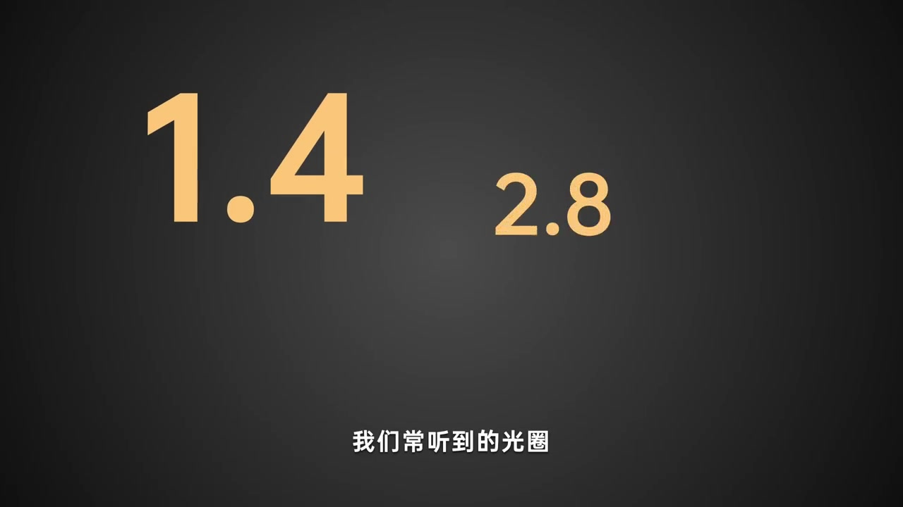
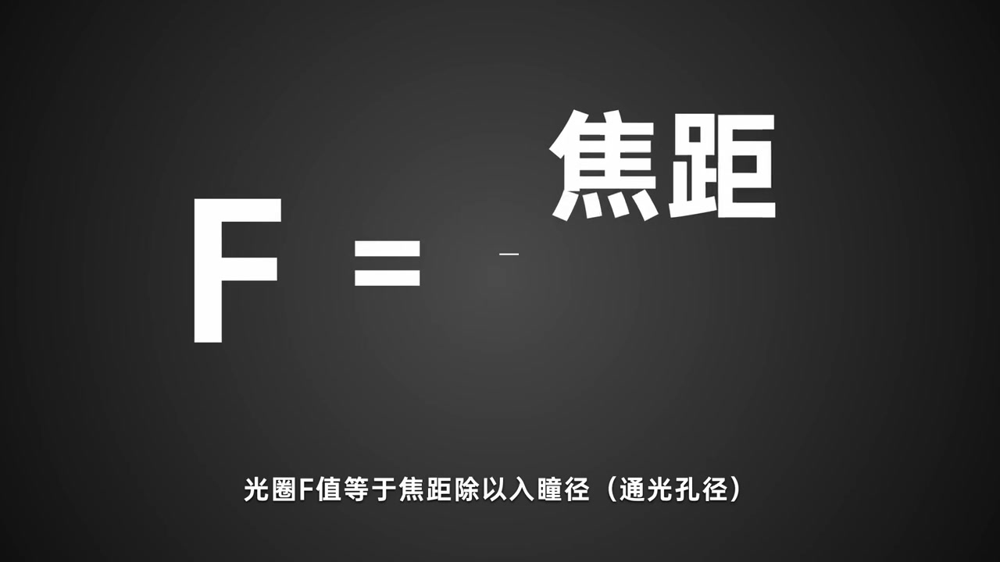
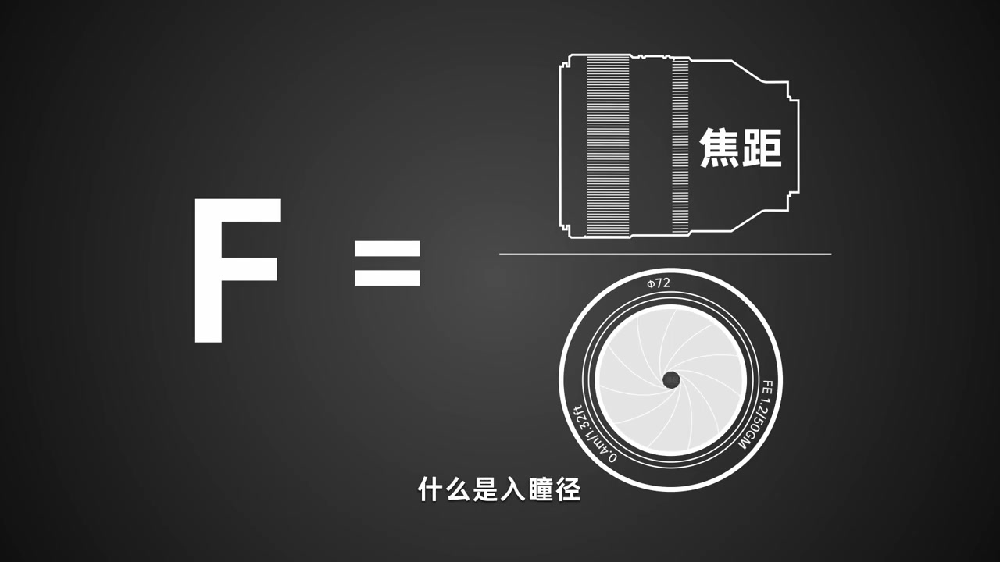
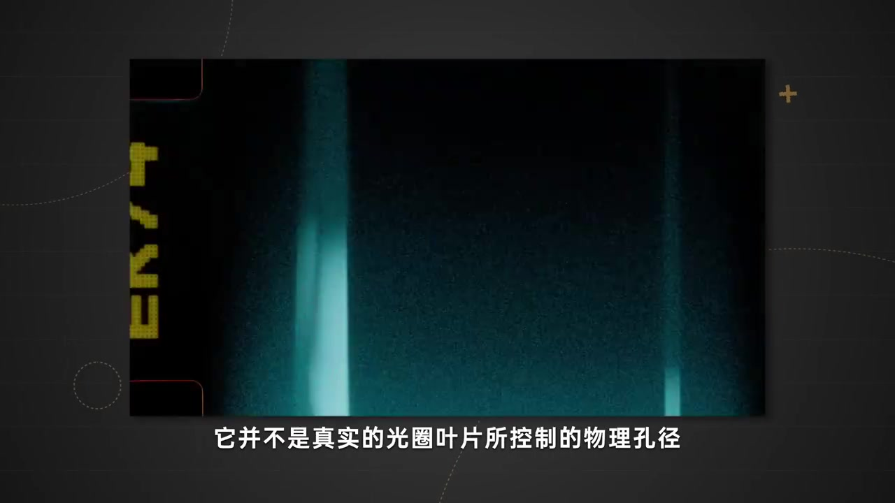
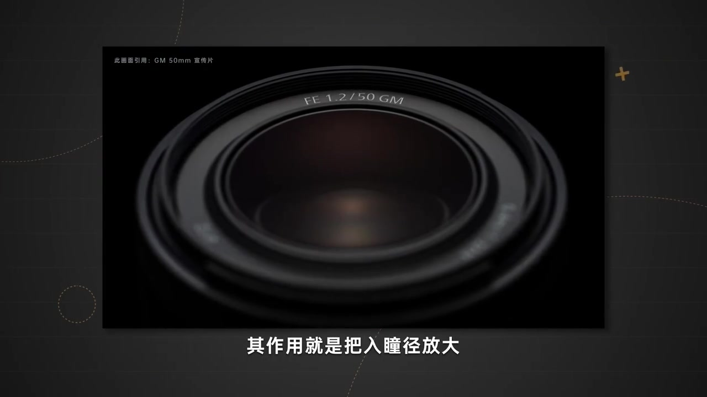

开场：我们常听到的光圈数字
深色底上先跳出熟悉的档位：F1.4、F2.8、F4、F8、F16……旁白说，这些是日常口中的「光圈」。动画用字号对比暗示：数字更小的 1.4 比 2.8「看起来更大」——后面马上会解释，这其实对应物理开孔更大。
旁白：「我们常听到的光圈 F1.4、F2.8、F4、F8、F16 等等等等」

相对光圈：数字小 ≠ 孔小
字幕点题：这些说的其实是镜头的相对光圈值。画面左侧标「F · 相对值」，右侧是 FE 1.2/50GM 正视图——F16 时开孔很小；随后切到更大数值时，孔仍小，旁白强调「数值越小代表实际物理光圈越大，数值越大则表示实际物理光圈越小」。
画面字幕：「这些说的其实是镜头的相对光圈值」「而数值越大则表示实际物理光圈越小」
很多人会把「数字大」误当成「孔大」。本段专门把这个相反关系摆上台面，为后面的公式解惑。
转场：不妨先看 F 值如何定义
既然反向直觉容易搞混，旁白提议先回到定义本身。标题卡打出「如何定义 F 值」——系列第一集的核心问题正式亮相。
旁白：「那我们不妨先看一下光圈的 F 值是如何定义的」
公式落地：F = 焦距 ÷ 入瞳径
画面写出公式：大写 F 等于焦距除以入瞳径（通光孔径）。旁白同步说明：这是焦距与入瞳径的比值；而入瞳径很大程度上正是由物理光圈所控制的。下一集会用具体毫米数算入瞳，本集先把「除以什么」说清楚。
画面字幕：「光圈 F 值等于焦距除以入瞳径（通光孔径）」
说明：Whisper 把「入瞳径」识成「入同境」、「除以入瞳径」识成「除以与入同境」。下文叙述与图注以可见字幕为准；页面末尾仍完整保留全部 Whisper 分段。

什么是入瞳径
旁白自问自答：入瞳径可以理解为「从镜头前看向其内部的视觉开孔直径」。动画把公式拆成图示——分子是侧视的焦距，分母是正视镜头里叶片围成的开孔——把抽象分母变成看得见的圆。
旁白：「我们可以理解为从镜头前看向其内部的视觉开孔直径」

关键区分：入瞳 ≠ 叶片物理孔径
紧接着纠偏：入瞳径并不是真实光圈叶片所控制的物理孔径。画面切到「从镜头前看进去」的风格化视点——强调观察者看到的开孔，可能因光学系统而与机械孔径不一致。
画面字幕：「它并不是真实的光圈叶片所控制的物理孔径」

大光圈镜头：前镜组把入瞳「放大」
为什么要强调这个区别？旁白解释：很多大光圈镜头的前镜组采用高曲率或高折射率镜片，作用就是把入瞳径放大。镜头特写引用 GM 50mm 宣传片画面，字幕写「其作用就是把入瞳径放大」——本集以「简单来说就像是这样」收束，把定义留给后续计算集接着用。
画面字幕：「其作用就是把入瞳径放大」

到这里，开篇任务完成：F 值是相对比值，分母是入瞳径，入瞳受物理光圈控制却又不等于叶片孔径本身。下一集就会用 50mm 把入瞳毫米数算出来。